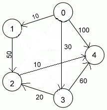

Algorithm
We do a DFS traversal of the given graph. For every visited vertex ‘v’, if there is an adjacent ‘u’ such that u is already visited and u is not parent of v, then there is a cycle in graph. If we don’t find such an adjacent for any vertex, we say that there is no cycle. The assumption of this approach is that there are no parallel edges between any two vertices.
For example in the below graph

There is a cycle 1-2-3.
Source Code
#include <bits/stdc++.h >
using namespace std;
vector<int> v1;
struct node
{
int x;
int val;
node *next1;
};
//funtion to create a directed graph using adjaceny list
void addedge(node a[],int *q,int src,int dest,int dist,int v)
{
node *ptr=new node();
node *head=a[src].next1;
ptr->x=dest;
ptr->val=1000;
a[src].next1=ptr;
ptr->next1=head;
//Way to enter values in a 2-d array passed as a parameter
q[(src*v)+dest]=dist;
}
//Function to print the graph
void print(node a[],int v)
{
for(int i=0;i<v;i++)
{
cout<<a[i].x<<"("<<a[i].val<<")"<<"\t";
node *ptr1=a[i].next1;
while(ptr1!=NULL)
{
cout<<"-"<<"\t"<<ptr1->x<<"\t";
ptr1=ptr1->next1;
}
cout<<"\n";
}
}
//Function to check whether the value given as a parameter is present in the vector or not
int is_member(int u)
{
int f;
for(int i=0;i<v1.size();i++)
{
if(u==v1[i])
{
f=1;
break;
}
else
f=0;
}
return f;
}
//Function to calculate the position corresponding to minimum distance in each step
int minimum(int *q,int v,int o)
{
int k=o;
int mini=q[o*v+o];
for(int i=0;i<v;i++)
{
int g=is_member(i);
{
if(g==0)
{
if(q[o*v+i]<mini)
{
k=i;
mini=q[o*v+i];
}
}
}
}
return k;
}
//Main function that uses all the above functions to apply dijkstra algorithm
int main()
{
int v,r,m,k,t;
cout<<"enter no. of vertices";
cin>>v;
//here take v according to the vertices given below.It is 5 here
node graph[v];
int d[v][v];
//Assigning initial large values between any two vertices.
for(int i=0;i<v;i++)
{
for(int j=0;j<v;j++)
{
d[i][j]=10000;
}
}
for(int i=0;i<v;i++)
{
graph[i].val=0;
graph[i].x=1;
graph[i].next1=NULL;
}
//use any of the given below to create an edge
/* while(cin.get()!='\n')
{
cin>>m>>k;
addedge(graph,m,k);
}*/
//or
addedge(graph,&d[0][0],0,1,10,v);
addedge(graph,&d[0][0],0,3,30,v);
addedge(graph,&d[0][0],0,4,100,v);
addedge(graph,&d[0][0],1,2,50,v);
addedge(graph,&d[0][0],2,4,10,v);
addedge(graph,&d[0][0],3,2,20,v);
addedge(graph,&d[0][0],3,4,60,v);
cout<<"enter vertex no. through which u want shortest path of all vertices"<<endl;
cin>>r;
v1.push_back(r);
while(v1.size()<v)
{
int l=minimum(&d[0][0],v,r);
v1.push_back(l);
for(int i=0;i<v;i++)
{
d[r][i]=min(d[r][i],(d[r][v1.back()]+d[v1.back()][i]));
}
//To print distances in each and every step.
/*for(int i=0;i<v;i++)
{
cout<<d[r][i]<<"\t";
}*/
}
for(int i=0;i<v;i++)
{
cout<<"d["<<r<<"]""["<<i<<"]="<<d[r][i]<<"\t";
}
return 0;
}